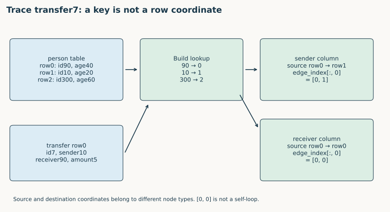
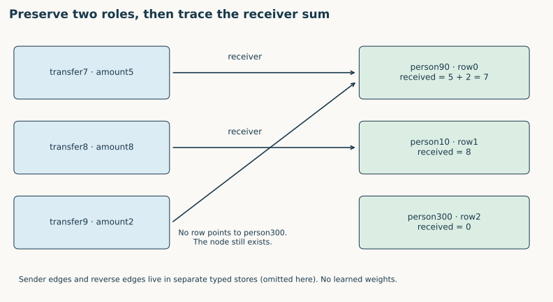
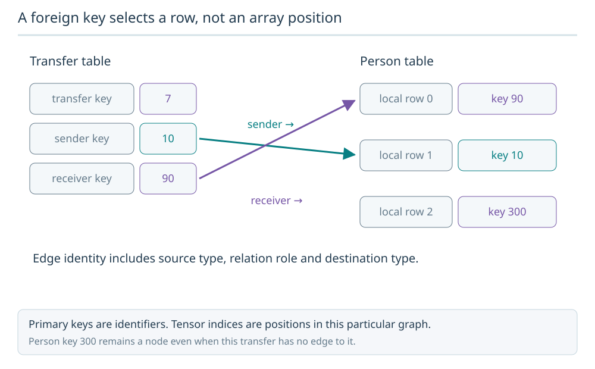
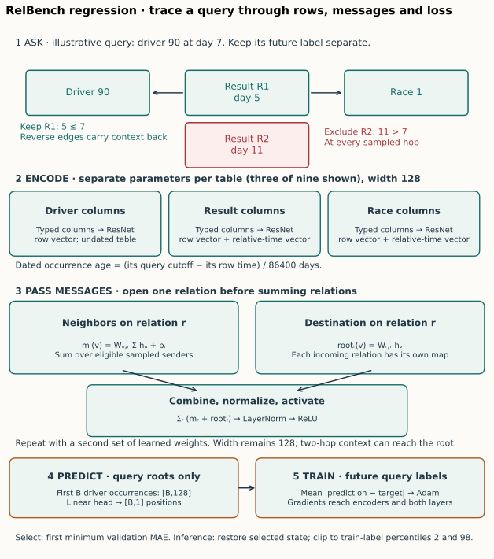

Year 4 · Quarter 1 · Lesson 122
REG construction: from database keys to a verified graph
One tangible win¶
Given tables and their declared keys, build a graph whose nodes, typed edges, and row features you can trace back to the database. Prove that construction against an independent relational join. You should be able to explain why each edge exists, not just print a HeteroData object.
Lesson 121 asked which relational information a representation preserves. This lesson makes that question executable: preserve row identity and declared relationships before learning weights. Recall L096 and L117, then work through a small database where using raw IDs as tensor indices fails visibly. L123 adds time-respecting sampling; L124 separates entity tables from prediction queries; L125 deepens row encoding.
Read: Fey et al., ICML 2024, §3.1–3.2 and Figure 4, then inspect the pinned RelBench graph constructor. The former defines the representation; the latter specifies executable choices. The score reproduction below is a named experiment from the separate RelBench v1 paper.
1 · Three graphs answer three different questions¶
A schema graph has a node per table: it says which kinds of entities can be connected. A relational entity graph (REG) expands each table into its individual rows. A computation graph selects the context used for one prediction, under a sampling and temporal contract. Building the second does not establish that the third is valid for a historical query. Fey §3.
In the core mapping, each table supplies a node type; each row supplies one node of that type; a non-null foreign key points to the matching parent row. The implementation stores both message directions explicitly. Nothing has been trained yet. A representation determines what information a later learner can access; its usefulness still requires evaluation.
Predict: if a person has no transactions, how many person nodes should disappear? Zero. Node existence follows table membership, not observed degree. Inferring num_nodes from the largest edge index can erase isolated trailing rows.
2 · Raw identity is not a tensor coordinate¶
Use this entire example; do not mentally sort it.
| Person row | id (PK) | age |
|---|---|---|
| 0 | 90 | 40 |
| 1 | 10 | 20 |
| 2 | 300 | 60 |
| Transfer row | id (PK) | sender (FK) | receiver (FK) | amount |
|---|---|---|---|---|
| 0 | 7 | 10 | 90 | 5 |
| 1 | 8 | 90 | 10 | 8 |
| 2 | 9 | NULL | 90 | 2 |
The person lookup is {90: 0, 10: 1, 300: 2}. Transfer7's sender key10 resolves to person row1; its receiver key90 resolves to person row0. Transfer7 itself is transfer row0. These coordinates belong to separate node stores.


lookup = {key: row for row, key in enumerate(primary_keys)}
# transfer row0 has receiver key90:
source_row = 0
destination_row = lookup[90] # 0
This fragment explains lookup, but production construction also rejects duplicate or null primary keys. Otherwise one database identity can map ambiguously, and a dictionary silently keeps only the last occurrence. Our first notebook task implements the validated lookup.
A relation's edge_index has shape [2, E]: each column holds [source_row, destination_row]. For receivers, the complete tensor is [[0, 1, 2], [0, 1, 0]]. Column [0,0] connects transfer row0 to person row0. It is not a self-loop: the types differ. These are PyG's source-to-destination coordinates; HeteroData documentation defines separately indexed node and edge stores.
CHECK before code: permute person rows to [300, 90, 10]. The receiver destination row sequence becomes [1,2,1]. The underlying links still mean transfer7→person90, transfer8→person10, transfer9→person90. Reorder features consistently and rebuild every affected endpoint.
3 · Preserve relationship roles and reverse direction¶
Both sender and receiver refer to the person table. Collapsing them to a single relation loses their roles. The released implementation names a relation with its foreign-key column:
kind = ('transfer', 'f2p_receiver', 'person')
data[kind].edge_index = receiver_edges
reverse = ('person', 'rev_f2p_receiver', 'transfer')
data[reverse].edge_index = receiver_edges.flip(0)
The sender relation has its own pair of stores. Thus this example has two forward types and two reverse types, with five forward edges and five reverse edges. A reverse edge supports message flow back along an existing relationship; it does not create a second observation or a new database foreign key. The paper's schematic type notation is simpler than this released column-specific convention; keep the source convention explicit. Pinned constructor.
Now perform an untrained diagnostic: send each transfer's amount along its receiver edge and sum at each person. Person90 receives 5 + 2 = 7; person10 receives 8; person300 receives 0. This small computation exposes whether you reversed the edge or confused sender with receiver. It is not a learned RDL prediction.


received = torch.zeros(data['person'].num_nodes)
edge = data['transfer', 'f2p_receiver', 'person'].edge_index
received.index_add_(0, edge[1], amounts[edge[0]])
# [7., 8., 0.] in the original person-row order
Predict the intervention: changing transfer7's receiver from 90 to 10 moves five units from person90 to person10. The result becomes [2,13,0]; all sender edges and row features stay fixed.
4 · Missing relationships and repeated observations¶
A null foreign key means this column supplies no parent link. It does not delete the row, its features, or its other relations. Transfer9 has no sender edge but still has a receiver edge and an amount.
A dangling key is different: a non-null key refers to no parent in the declared input database. Our constructor raises an error. It does not silently discard the relationship. If a database snapshot intentionally removed the parent, decide and document the snapshot/remapping policy before construction. The released graph builder expects already-normalized keys; upstream dataset processing may have handled missing references before it runs. Our audit establishes the released input's identity, not the completeness of its original operational database.
A junction table also remains a node type. Two rows recording the same sender/receiver pair at different amounts or times are two observations. Projecting them into one person-to-person edge can erase multiplicity and row attributes. Any such projection needs its own representation contract; it is not this row-to-node REG.
Task 2: implement foreign-key resolution, preserving source-row positions when nulls occur in the middle. Return shape [2,0] for an empty relation. Reject missing parents and duplicate primary keys.
5 · Construct the graph, then encode its rows¶
Task 3: assemble HeteroData with explicit num_nodes for every table, a store per FK role, and its reverse. Return the non-key feature column names in their original order. The visible constructor is embedded into both notebooks; three task implementations feed the actual graph and diagnostic sum.
For our example, the person feature is age and the transfer feature is amount. Keys route relationships; their numerical magnitudes do not enter the released row encoder as continuous features. This is a particular modeling choice, not a theorem that every identifier lacks signal. Released key removal and materialization.
The teaching constructor separates topology from encoding: it returns feature names, not fitted embeddings. The full runner materializes typed columns into a TensorFrame, computes the released statistics, and applies learned per-table encoders. A table with no remaining feature columns receives a constant feature in the released implementation. Explicit num_nodes still preserves rows even without useful features. L125 studies this encoding boundary in detail.
Temporal boundary: the complete released F1 graph below includes data up to the benchmark's test cutoff. It is not wholly visible to every query. The full runner uses query-time sampling. Historical ingestion and mutable-feature histories are unavailable; static graph correctness cannot prove absence of temporal leakage. L123 will focus on this second contract.
6 · Audit a complete real database¶
The default notebook builds the small graph and reconstructs all released F1 key rows into a graph and audits its topology against independently verified edge pairs. The separate graph-audit command rebuilds that topology from the complete released database, calls our constructor, compares every edge with SQL, and invokes the original pinned graph constructor. It saves the full compact topology and a local loadable HeteroData artifact. This is the real relational-data exercise (Tier B); the tiny fixture isolates failure modes (Tier C).
Full released F1 topology: PASS. 74063 rows; 13 forward relation types; 338842 directed edges, including reverses.
| Table | Nodes |
|---|---|
| constructor_results | 9,408 |
| constructor_standings | 10,170 |
| circuits | 77 |
| qualifying | 4,082 |
| drivers | 857 |
| results | 20,323 |
| races | 820 |
| standings | 28,115 |
| constructors | 211 |
Every forward endpoint matches an independent SQL join; reverse endpoints match after sorting. Complete audit.
Counts alone are insufficient: two incorrect edge lists can have the same length. We compare exact endpoint pairs, distinguish edge-order conventions from semantics, and check every reverse edge. We also test permutation equivariance at the identity level, repeated endpoint observations, isolated rows, nulls, and missing parents.
A valid tensor can encode the wrong database. Keep the three transfer rows and person-row order from Section 2, but swap the receivers of transfers7 and8:
| Transfer key | Correct receiver key | Wrong receiver key |
|---|---|---|
| 7 | 90 | 10 |
| 8 | 10 | 90 |
| 9 | 90 | 90 |
The correct destination indices are [0,1,0]; the wrong ones are [1,0,0]. Both have three edges and receiver degrees [2,1,0]. All indices are in bounds. Rebuilding the reverse relation from the wrong tensor preserves the reverse-edge check too. PyG's validate checks structural consistency; it does not have the original database foreign-key values to verify these links.
Decode each endpoint back to its raw key and compare the exact pairs with an independent SQL join. That rejects the swapped links. A count, degree sequence, or successful tensor operation would not.
Try the diagnostic. Send the original amounts [5,8,2] through the wrong receiver tensor. What changes? What if every amount were 1?
Check the swapped endpoints
The wrong sum is [10,5,0], instead of [7,8,0]. With all amounts equal to 1, both graphs give [2,1,0], so this value diagnostic becomes blind to the mistake. The exact key-pair comparison still rejects it.
The local original-code topology comparison uses constant features and omits time attributes because the historical helper attempts an in-place write to a read-only array under the current pandas runtime. This is recorded in the audit. Every GPU fit separately executes the full released feature/time path in the pinned runtime. The local topology check does not establish feature, timestamp, or score parity by itself.
7 · Follow the graph into the full selected reproduction¶
A graph audit alone does not reproduce a predictive result. To exercise the complete pipeline, this package also runs RelBench v1 Table 7, F1 driver-position, RDL, using the pinned release protocol. This is the companion experiment introduced in L117, executed afresh here. It is not Fey's beta benchmark or the entire RelBench paper. Robinson et al., Table 7 and Appendix B.
A foreign key selects a row, not an array position
Transfer 7 has sender key 10 and receiver key 90. Person key 10 maps to local row 1; key 90 maps to local row 0. The two edge types preserve these roles.

Predict: Where does sender key 10 point?
To Person local row 1. Treating database key 10 as array position 10 would corrupt the graph.
Answer: To Person local row 1. Treating database key 10 as array position 10 would corrupt the graph.



Diagram trace. Follow a raw key into a row index, then from typed features to the seed head. Which construction steps can be checked without training? On a narrow screen, scroll the figure sideways.
Forward pass: each table's typed inputs pass through its Frame encoders and four-block row ResNet to width 128. Query-relative time contributes a temporal encoding. Two typed sum-GraphSAGE rounds use the sampled edges, relation-specific transforms and root maps, with normalization and ReLU. A scalar head predicts the seed driver's position. The loss is mean absolute error over labeled seed queries. Adam updates learned parameters; validation MAE selects the first best checkpoint. Test predictions are scored only after selection.
The full implementation and trainer are visible in the notebook appendix. Sampling uses the released fanouts [128,64], batch 512; Adam uses learning rate .005; each of seeds 0–4 runs ten full epochs. All 7,453 training queries participate per epoch, followed by official 499/760 validation/test queries. Predictions use the released train-target percentile clipping. The complete experiment is separately gated from default notebook execution.
Protocol boundaries: the release's fanout differs from the paper table's single neighbor count 128. Released feature statistics use the test-censored database and are not train-only. Historical random-state/package identity is unavailable. The protocol records these facts before scores are interpreted. Predeclared comparison: absolute difference from each published mean at most 0.2 MAE, a descriptive “CLOSE” rule rather than an equivalence test.
Fresh author-reference execution: COMPLETE selected released-protocol experiment.
| Split | Mean MAE | Sample seed SD | Published mean | Verdict |
|---|---|---|---|---|
| val | 3.188699 | 0.022461 | 3.193 | CLOSE |
| test | 4.055114 | 0.151709 | 4.022 | CLOSE |
| Seed | Selected epoch | Validation MAE | Test MAE |
|---|---|---|---|
| 0 | 8 | 3.208458 | 3.999522 |
| 1 | 8 | 3.193066 | 4.066840 |
| 2 | 10 | 3.195916 | 4.263041 |
| 3 | 10 | 3.149950 | 3.846310 |
| 4 | 7 | 3.196104 | 4.099856 |
All 6,295 final predictions were independently scored. Maximum original-model output discrepancy: 3.81e-06. Measured pilot plus full-fit worker resource estimate: USD 0.0526, excluding unitemized overhead. The aggregate plan caps reservations plus overhead reserve at USD 10. Evidence.
Each seed has its own new run UUID, checkpoint hash, epoch trace, saved predictions and original-model output replay. Results from prior lessons are not used as new training evidence. Notebook rescoring is explicitly a replay of author predictions. Your learning status remains PENDING_WRITTEN_DEFENSE until you implement and explain the work.
8 · EXIT: defend the construction¶
Submit your three functions, graph counts, the received-amount trace, and a short written defense:
- Explain why
[0,0]can be an inter-table edge, and why key90 is not row90. - Show what changes under the person-row permutation and what stays invariant.
- Explain the different consequences of a null FK, a dangling FK, and a junction row.
- Give an incorrect graph with the correct edge count and explain which audit rejects it.
- Distinguish construction parity, the full selected training result, whole-paper parity, and temporal validity.
Student lab · Executed solution · Reference · Exact commands and evidence boundaries.
In 1, 7, and 30 days, reconstruct the two edge tensors from the raw tables without notes. Ask the agent follow-up questions about any key lookup, relation direction, source deviation, or reproduction claim you cannot yet defend.
Carry this forward. Restrict each prediction to the rows visible at its own cutoff. Continue to Lesson 123.